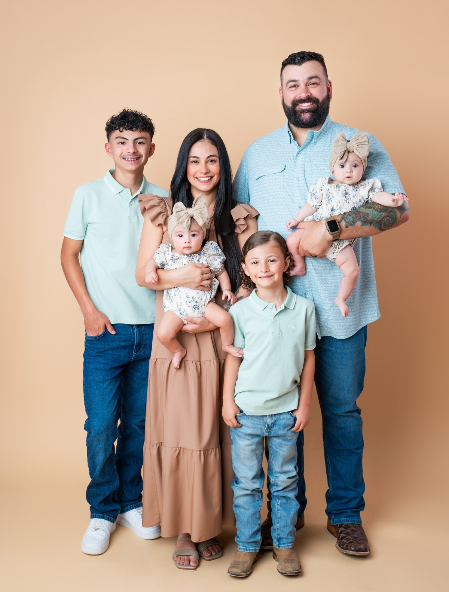

Home › About
Twelve years teaching firearms training. More than eight of them certified by the Texas Department of Public Safety to teach the License to Carry. Thousands of Texans qualified and carrying lawfully.
Why I teach
Most of the people who walk into my class are not gun people. They're a nurse who works nights, a mom whose neighborhood stopped feeling the way it used to, a couple who finally decided this was the year. They're not looking to become tactical operators. They want to be capable and they want to be legal, in that order.
What almost all of them arrive with is bad information. They've been told Texas is a constitutional carry state. It isn't — Texas has permitless carry, and the difference between those two things is how a law-abiding person ends up in a felony situation without ever intending to break a law.
Clearing that up is the most valuable hour of the whole course, and it's the reason I keep teaching it.

How the class runs
Seats are limited every time, and they fill — most classes are half booked before I even announce them. That's not a sales tactic, it's the size a class has to be if every question is going to get answered.
Other instructors make you pay $200 for a basics course before you're allowed to take the LTC class. If you're new, I teach you the basics as part of the day. That's how it should work.
First time holding a handgun, or first time in twenty years — same treatment. We go at your pace on the line. There is no version of this where you get made to feel stupid in front of the group.
I'll tell you when you don't need the thing you're about to buy. I'll also tell you where to get the good deal in town instead of pocketing the difference myself.
Use of force, deadly force, where you can carry, what to do after. Not statute numbers read off a slide — what it means when it's your living room at two in the morning.
Class ends, the relationship doesn't. Questions about a holster, a new carry gun, whether something you read online is true — message me. I answer.

Del Rio
Del Rio isn't a market to me, it's the town. My students are neighbors, coworkers, church family and the people I end up standing behind in line at the store. When you teach the people you live next to, you teach differently — you're accountable to them long after the certificate is signed.
Wade's Tactical serves Del Rio and the surrounding area, including families out at Laughlin, folks driving in from Brackettville, Comstock and across Val Verde County.
Along the way I've built up a good bit of Del Rio in the process — sending students to Juan at EZ Pawn on Veterans when they're buying, working with Eclipse Holsters on carry rigs, and getting sponsored on class pricing by local businesses like Five Points Market when they want to help neighbors get licensed.
What I believe
A .380 ACP has a faster response time than 911. That's a joke with a serious spine in it — help is minutes away when seconds count, and the gap between the two is where families get hurt. Being a capable person closes that gap. Nothing else does.
Capable means trained, not armed. It means carrying every day instead of on the days you feel nervous. It means understanding the law well enough that you never have to guess. And it means keeping your head on a swivel long before anything ever becomes a shooting problem.

Message me with your questions — there is no such thing as one that's too basic.